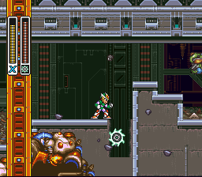
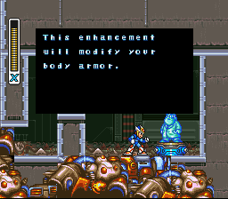
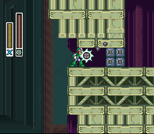
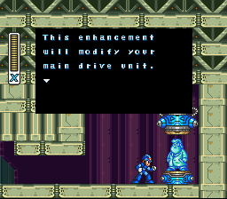
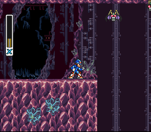
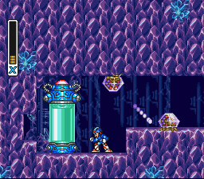
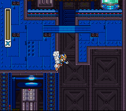
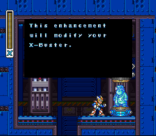

O que são os Upgrades de Armadura?
Durante sua jornada, X pode encontrar cápsulas deixadas pelo Dr. Light.
Cada cápsula oferece uma parte da armadura, que concede habilidades especiais — como:
- Botas que permitem dash(inclusive no ar)
- Capacetes que detectam itens
- Peitorais que criam uma explosão atômica
- Canhões que melhoram o poder de ataque
Coletar os quatro upgrades transforma totalmente a jogabilidade e fortalece X para os desafios mais difíceis.


Morph moth
No final da parte onde as coisas sobem pela primeira vez, repare que seu capacete detecta algo suspeito, use o S. whell, desça e encontre a cápsula do peitoral.


Overdrive Ostrich
Logo abaixo de onde vc pegou o Heart Tank, Logo a frente você se deparará com esta parede. Quebre-a com a S. Wheel, a cápsula do dash estará lá dentro(você vai usar MUITO esse upgrade durante o jogo)


Crystl Snail
Caia escorregando assim que ver o primeiro morcego da fase Vá totalmente á esquerda lá em baixo, terá alguns inimigos, mas eles morrem facilmemte com a Buster, aqui você vai achar a cápsula do capacete.


Wheel Gator
Suba esta parede, logo após a escadinha, Use o dash no ar para se pendurar nesta parede a frente e a cápsula da Buster estará nessa salinha(não sei como nenhum inimigo viu isso no meio da base deles)